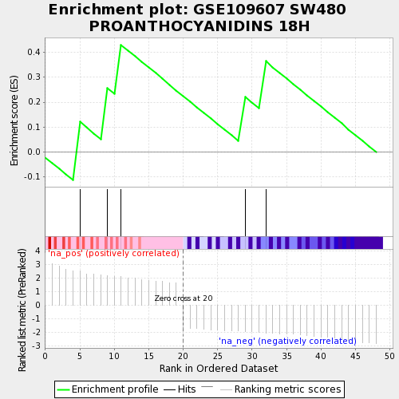
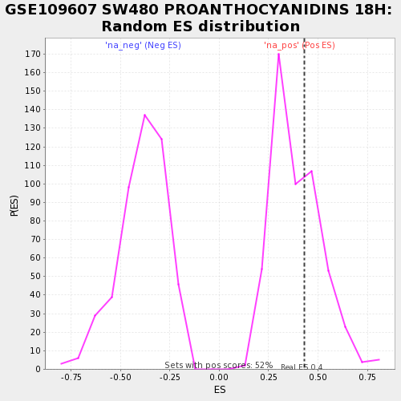

| | | Dataset | testA |
| Phenotype | NoPhenotypeAvailable |
| Upregulated in class | na_pos |
| GeneSet | GSE109607 SW480 PROANTHOCYANIDINS 18H |
| Enrichment Score (ES) | 0.4295717 |
| Normalized Enrichment Score (NES) | 1.0975273 |
| Nominal p-value | 0.36679536 |
| FDR q-value | 0.79838246 |
| FWER p-Value | 1.0 |
Table: GSEA Results Summary

Fig 1: Enrichment plot: GSE109607 SW480 PROANTHOCYANIDINS 18H
Profile of the Running ES Score & Positions of GeneSet Members on the Rank Ordered List

Fig 2: GSE109607 SW480 PROANTHOCYANIDINS 18H: Random ES distribution
Gene set null distribution of ES for GSE109607 SW480 PROANTHOCYANIDINS 18H